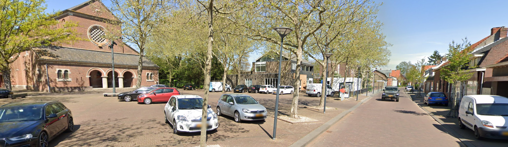

Voorstel voor het oprichten van een gemeentebreed Ondernemersfonds Bergen op Zoom
Hier vindt u antwoord op veelgestelde vragen over het in voorbereiding zijnde gemeentebrede Ondernemersfonds in Bergen op Zoom. Transparantie staat voorop: deze pagina wordt voortdurend aangevuld met nieuwe vragen die we ophalen uit gesprekken met ondernemers, ondernemersverenigingen en maatschappelijke partners.
Een gemeentebreed ondernemersfonds is een fonds dat door en voor ondernemers wordt beheerd via een onafhankelijke stichting. Vanuit dit fonds kunnen ondernemers gezamenlijk investeren in het gemeenschappelijk belang. Denk aan een bedrijventerrein, een dorpscentrum, de wijkeconomie, het buitengebied of gemeentebrede thema's. Het fonds biedt een vrije financiële positie in handen van ondernemers en lokale organisaties: zij bepalen zelf waaraan het geld wordt besteed.
In Nederland werken inmiddels ruim 50 gemeenten met een dergelijk fonds, van groot (Utrecht, Groningen, Leeuwarden) tot klein (Waddeneilanden). In Brabant zijn er onder andere fondsen in Helmond, Deurne, Laarbeek en Gorinchem.
Lokale ondernemers krijgen met steeds meer uitdagingen te maken: verduurzaming en energietransitie, netcongestie, arbeidsmarkt en aansluiting met onderwijs, bereikbaarheid, veiligheid en de uitstraling van bedrijventerreinen en centra. Dit zijn opgaven die ondernemers niet alleen kunnen oplossen en die om collectieve slagkracht vragen.
Specifiek voor Bergen op Zoom signaleren we knelpunten op het gebied van veiligheid, samenwerking en uitstraling, met name op bedrijventerrein TNP. De organisatiegraad is op verschillende plekken laag, collectieve voorzieningen komen moeilijk tot stand en het risico op verloedering neemt toe. Met een ondernemersfonds:
Ondernemers brengen het geld zelf op via een kleine opslag op de OZB voor niet-woningen. Eigenaren en gebruikers van een zakelijk object investeren gezamenlijk een bedrag per € 100.000 WOZ-waarde. De bijdrage wordt verdeeld tussen eigenaar (56%) en gebruiker (44%).
De gemeente int de opslag via de reguliere OZB-aanslag en zet de meeropbrengst één-op-één door naar de onafhankelijke Stichting Ondernemersfonds Bergen op Zoom. Alle betalers van OZB niet-woningen doen mee. Behalve bedrijven zijn dat bijvoorbeeld ook scholen, sportgebouwen, cultuurvastgoed en zorglocaties.
Geadviseerd wordt om te werken met een vast tarief van € 60 per € 100.000 WOZ-waarde. De bijdrage wordt verdeeld tussen eigenaar (56%) en gebruiker (44%).
Bij dit tarief wordt de fondsomvang voor Bergen op Zoom geschat op circa € 1.112.000 per jaar, waarvan 10% (± € 111.000) gereserveerd is voor gemeentebrede initiatieven. Het exacte bedrag hangt af van de definitieve WOZ-waarden en het besluit van de gemeenteraad.
Uitgaande van het voorgestelde tarief van € 60 per € 100.000 WOZ-waarde, met een verdeling 56% eigenaar / 44% gebruiker:
| Situatie (WOZ € 300.000) | Bijdrage per jaar |
|---|---|
| Gebruiker / huurder | € 79,- |
| Eigenaar | € 101,- |
| Eigenaar én gebruiker | € 180,- |
De ervaring uit andere fondsen leert dat de individuele draaglast overzichtelijk blijft en niet leidt tot een merkbare aanpassing van de algehele kostenstructuur van een bedrijf. Tegelijkertijd is er sprake van een substantiële opbrengst voor het collectief.
Het fonds is een 'regelvrije ruimte' met volkomen bestedingsvrijheid voor ondernemers. Alles wat binnen het collectief tot gezamenlijk belang wordt benoemd komt voor financiering in aanmerking. Voorbeelden uit andere gemeenten:
In de meeste fondsen ontwikkelen de bestedingen zich over de tijd van praktische voorzieningen op korte termijn naar visiegedreven, structurele investeringen met cofinanciering.
Het fonds gaat naar verwachting werken met trekkingsrechten: ieder gebied beschikt over een gezamenlijk investeringsbudget naar rato van de eigen inleg in het fonds. De ondernemers in het gebied besluiten zelf gezamenlijk over de bestedingen. Als u een plan heeft, meldt u zich bij het collectief in uw gebied.
Voor gemeentebrede initiatieven wordt een vast aandeel in het fonds gereserveerd. Initiatieven met een gebiedsoverstijgend karakter kunnen via één van de collectieven worden ingediend.
De definitieve aanvraagprocedure en de exacte trekkingsgebieden voor Bergen op Zoom worden in de huidige verkenningsfase samen met de initiatiefgroep uitgewerkt.
Voorgesteld worden zes trekkingsgebieden (werkgebieden):
De exacte grenzen liggen nog niet definitief vast en kunnen bij de verdere uitwerking op onderdelen wijzigen.
TNP, Lage Meren-Meilust (LMM) en Oude Molen vormen samen het trekkingsgebied Bedrijventerreinen. Voorgesteld wordt om de bedrijventerreinverenigingen te bundelen in een Stichting Parksamenwerking Bergen op Zoom, die het dagelijkse parkbeheer (schoon, heel, veilig) combineert met parkontwikkeling: gezamenlijk optrekken op strategische opgaven zoals beveiliging, ondermijning, truckparking en de samenwerking met onderwijs. Elk terrein behoudt daarnaast een eigen agenda voor terreinspecifieke zaken zoals bewegwijzering en groenonderhoud.
Het buitengebied (inclusief Lepelstraat) kent een grote diversiteit aan bedrijvigheid, van agrarische bedrijven tot recreatie en toerisme, en is nu nog beperkt gezamenlijk georganiseerd. Er is contact gezocht met HISWA-RECRON en ZLTO, maar dit heeft nog niet geleid tot een gezamenlijke vertegenwoordiging. Een eigen trekkingsrecht voor het buitengebied kan hier, net als in Deurne (waar Stichting Buitengebied Deurne inmiddels ondernemers uit verschillende sectoren verbindt), een impuls geven aan de organisatiegraad.
Ja. Het trekkingsrecht van een gebied blijft ter beschikking staan aan het collectief ter plaatse. En zolang er nog geen collectief is, blijft het trekkingsrecht voor het gebied gereserveerd. Er kan dus gespaard worden voor grotere investeringen. Oneindig oppotten is niet de bedoeling; bij langdurig onbenut trekkingsrecht zoekt het bestuur het gesprek met de trekkingsgerechtigde om te bespreken hoe het fonds beter kan worden gebruikt.
Een onafhankelijke stichting, de Stichting Ondernemersfonds Bergen op Zoom, beheert het geld in één kas. Het bestuur bestaat uit ondernemers met een netwerk in ondernemend Bergen op Zoom en gevoel voor de lokale economie. Het bestuur heeft ten minste vier taken:
De verhouding tussen het fonds en de gemeente wordt vastgelegd in een convenant met twee principiële uitgangspunten:
De gemeente is zelf ook eigenaar en gebruiker van zakelijk vastgoed en betaalt via die weg mee aan het fonds. Ook hier geldt: meebetalen, maar niet meebeslissen.
Naast het bestuur komt er een adviesraad: een representatieve afvaardiging van de verschillende groepen ondernemers en maatschappelijke organisaties die meebetalen. Het bestuur legt jaarlijks verantwoording af aan de adviesraad. Daarnaast verschijnt er jaarlijks een jaarverslag met accountantsverklaring richting de gemeente, aangezien het fonds met publiek geïnde middelen wordt gevoed.
Landelijk is de vuistregel dat circa 6% van een ondernemersfonds nodig is voor centrale kosten: technische inrichting, communicatie en website, accountantscontrole en secretariaat. In Bergen op Zoom wordt hiervoor het gemeentebrede aandeel van 10% (± € 111.000) gebruikt: een deel dekt deze vaste kosten en professionele ondersteuning (bijvoorbeeld een fondsmanager), en het resterende deel is bedoeld voor grotere, gebiedsoverstijgende initiatieven. In het opstartjaar kunnen de kosten tijdelijk hoger liggen door eenmalige zaken zoals de oprichting van de stichting en de opzet van de website en boekhouding.
Maatschappelijk vastgoed doet ook mee in het fonds; non-profitorganisaties worden van harte uitgenodigd om actief te zijn binnen het fonds. De ervaring elders is dat zij vaak actieve gebruikers zijn: ze hebben belang bij veiligheid, uitstraling, beheer, promotie en activiteiten, én brengen specifieke belangen in:
Voor Bergen op Zoom zijn onder andere onderwijsinstelling Curio en ziekenhuis Bravis al bij de initiatiefgroep aangehaakt.
In Bergen op Zoom voert ondernemersvereniging Sterck momenteel de BIZ Binnenstad uit. Het voorstel is dat deze overgaat in het ondernemersfonds: het werkgebied van het trekkingsgebied Centrum wordt daarbij groter dan het huidige BIZ-gebied, omdat de bijdrage voortaan naar rato van de WOZ-waarde wordt geheven in plaats van een vast bedrag per object. Sterck ondersteunt deze uitbreiding, onder de voorwaarde dat het huidige serviceniveau behouden blijft; gemeente en Sterck bekijken samen hoe dit het beste kan worden geborgd. Een belangrijk uitgangspunt is dat ondernemers niet dubbel betalen.
In de raadsbegroting 2026 is opgenomen dat de gemeente toewerkt naar een raadsvoorstel voor invoering van een gemeentebreed ondernemersfonds per 1 januari 2027, mits er voldoende draagvlak bestaat. Sinds de aftrapbijeenkomst op 5 februari 2026 in het Delta Agrifood Business Lab zijn drie bijeenkomsten van de initiatiefgroep gehouden; een vierde bijeenkomst staat gepland op 21 september 2026.
Er ligt inmiddels een inhoudelijk uitgewerkt voorstel, met een advies aan de gemeenteraad om het fonds in te voeren. Na bespreking met de initiatiefgroep en verdere communicatie richting ondernemers en organisaties wordt het voorstel naar verwachting in november/december 2026 ter besluitvorming aan de gemeenteraad voorgelegd, bij het vaststellen van de OZB-tarieven.
Het advies is om het Ondernemersfonds Bergen op Zoom in te voeren. Dit advies is gebaseerd op een duidelijke economische en maatschappelijke meerwaarde, een breed gedragen inhoudelijk fundament (gebiedsindeling, governance en financiële systematiek zijn uitgewerkt in overleg met de initiatiefgroep), een uitvoerbare financiële en organisatorische basis, en groeiend draagvlak gedurende het traject. De resterende aandachtspunten liggen vooral in de verdere uitwerking van de governance en de praktische samenwerking, en staan de besluitvorming niet in de weg.
In de initiatiefgroep zijn vertegenwoordigd:
De groep wordt waar nodig nog aangevuld met partijen uit onder meer sport, cultuur, zorg en landbouw, zodat een zo representatief mogelijk beeld ontstaat van ondernemend Bergen op Zoom. Voor het buitengebied is inmiddels contact gezocht met HISWA-RECRON en ZLTO; dit heeft nog niet geleid tot een gezamenlijke vertegenwoordiging, maar de komst van het fonds kan hier juist een impuls aan geven.
Het draagvlak is de afgelopen periode gegroeid. VNO-NCW Brabantse Wal en MKB Bergen op Zoom zijn nadrukkelijk voorstander. De besturen van de drie bedrijventerreinverenigingen (TNP, LMM en Oude Molen) zien inmiddels de meerwaarde en pleiten zelfs voor een directe start met het volledige tarief van € 60. Ondernemersvereniging Sterck (binnenstad) is voorstander, mits het huidige serviceniveau van de BIZ behouden blijft. Ook de winkeliersvereniging van Halsteren, aanvankelijk terughoudend, is inmiddels voorstander. Onderwijsinstelling Curio en ziekenhuis Bravis zijn vanaf een vroeg stadium aangesloten. Enkele partijen zijn kritisch over het proces; deze signalen worden meegenomen in de verdere uitwerking.
Adviesbureau Blaauwberg uit Leiden begeleidt de verkenning. Blaauwberg heeft ruime ervaring met de begeleiding van ondernemersfondsen in tientallen Nederlandse gemeenten, waaronder Helmond, Deurne, Leiden, Delft en Leeuwarden. Het bureau brengt landelijke praktijkervaring in en helpt bij gesprekken, draagvlakopbouw, het uitwerken van de startnotitie en de inhoudelijke vormgeving van het fonds.
Ja, in Nederland werken inmiddels ruim vijftig gemeenten met een ondernemersfonds, van grote steden tot kleine gemeenten. Een paar voorbeelden met een eigen website waar u de werkwijze en projecten kunt bekijken:
Deze fondsen laten zien hoe een gemeentebreed fonds er in de praktijk uitziet: van trekkingsgebieden en tarieven tot concrete projecten.
Ondernemersfondsen financieren een grote diversiteit aan projecten, van klein en praktisch tot groot en strategisch. Een paar concrete voorbeelden per soort initiatief:
Deze voorbeelden laten zien hoe breed de bestedingsvrijheid in de praktijk wordt ingevuld: van feestverlichting tot energietransitie, en van een enkel evenement tot structurele samenwerking.
De routing van een fonds verloopt doorgaans in drie fasen, met telkens een go/no-go-moment:
Het voorstel wordt eerst besproken met de initiatiefgroep; de uitkomsten hiervan worden verwerkt in de definitieve versie. Daarna communiceren de initiatiefgroep en de gemeente breed over het voorstel. De gemeenteraad kan een ondernemersfonds alleen invoeren bij het vaststellen van de OZB-tarieven, wat jaarlijks gebeurt in de begrotingsvergadering (november/december). Bij een positief besluit kan het fonds per 1 januari 2027 van start gaan. Daarna volgen nog enkele praktische stappen: het oprichten van de Stichting Ondernemersfonds Bergen op Zoom (met bestuur), het opstellen van een convenant tussen gemeente en stichting, het oprichten van de adviesraad, en het verder uitwerken van de samenwerking tussen de trekkingsgebieden en de gemeentebrede organisatie.
Iedere ondernemer en maatschappelijke organisatie in Bergen op Zoom is welkom om mee te denken. Dat kan via uw eigen ondernemersvereniging of gebiedscollectief, via een lid van de initiatiefgroep, of door rechtstreeks contact op te nemen met de gemeente of met Blaauwberg. Heeft u een vraag die nog niet op deze pagina staat? Laat het ons weten via de contactgegevens in het colofon. We vullen de Q&A aan met nieuwe vragen die binnenkomen.
Deze Q&A wordt regelmatig bijgewerkt naarmate de verkenning vordert. Laatste update: 15 september 2026.
Wilt u meer weten over wat het fonds voor uw gebied kan betekenen? Neem contact op.
Contact